Every example spec in the flow-illustration skill, animated. Reload to replay the build. Copy a spec, change it, render it with node scripts/render.mjs.
large
A fleet of agents on the live graphThe same figure on a brand-blue field.agents-graph-bluejson · svg · png
A fleet of agents on the live graphThe live model at the centre, three rings of connected items; agents travel the links and land their work as blue squares.agents-graphjson · svg · png · mp4
Run workstreams in parallelBranches fork off the live baseline, merge back through review, and leave a baseline at every merge; a what-if stays open on the side.branching-widejson · svg · png
One spec changes. The agents handle the rest.Four steps: a supplier spec lands, the graph flags what it touches, an agent works the change on a branch, an engineer reviews and merges.change-flowjson · svg · png · mp4
Deployment optionsThe same Flow program in three environments: Flow's cloud, GovCloud, or your own servers. Each adds a boundary, and each has a single port in.deployment-stackjson · svg · png · mp4
How reviews workClaim: nothing reaches the baseline until checks pass and every required reviewer approves. Four steps: a change request opens on a branch, required reviewers are assigned, checks run and reviewers approve, the branch merges and a baseline is recorded.how-reviews-workjson · svg · png · mp4
Engineering, without the driftThe Flow symbol's 1:3 Lissajous in its rest pose, front arc solid, back arc dotted, dots at the turning points and crossings, with drafting guides.lissajous-herojson · svg · png · mp4
A living systems graphThe systems graph stack on the site's deep neutral surface: marks keep their meaning, blue lifts to the ramp's light step.systems-graph-stack-darkjson · svg · png
A living systems graphRequirements, architecture, CAD and tests as four planes of one model; a trace runs from one requirement through every layer.systems-graph-stackjson · svg · png · mp4
small
A fleet of agentsAgents orbit the live graph, working the whole program at once.agentsjson · svg · png
A permanent recordEvery revision is an entry: what changed, who changed it, and why.audit-trailjson · svg · png
AutomationsA change fires the agent, which fans the work out to every affected artifact.automationsjson · svg · png
Immutable baselinesEvery merge leaves a timestamped snapshot you can compare and revert to.baselinesjson · svg · png
Branch-level permissionsA branch can be scoped to the people and partners allowed to see and edit it.branch-permissionsjson · svg · png
Work on a branchWork forks off the live baseline, moves on its own, and merges back when it's ready.branchingjson · svg · png
Compare any two baselinesTwo snapshots side by side; the rows that changed between them stand out.compare-baselinesjson · svg · png
Every clause checkedChecks sweep the requirements on every change: done, in progress, and one finding.compliancejson · svg · png
Contradictions caught on editThree requirements in flight; the one that contradicts another is flagged before it lands.conflictsjson · svg · png
Cross-linksTwo hierarchies, linked across: peers stay connected wherever they sit in the tree.cross-linksjson · svg · png
Your own data modelDefine the entity types your program needs; each branch is a type with its own fields.data-modeljson · svg · png
Structured decompositionTop-level intent breaks down into subsystem and component requirements.decompositionjson · svg · png
Live parametersValues flow from the items they depend on into one computed result that stays current.formulasjson · svg · png
Impact in secondsChange one requirement and the affected items light up, while one conflict is flagged.impact-analysisjson · svg · png
Bring in existing specsDocuments come in, the agent reads them, structured requirements come out with their source links.ingestionjson · svg · png
Agents run across your toolsEngineers stay in their tools; Flow connects to each through a port at its boundary.integrationsjson · svg · png
Flow MCPAny AI client connects to the graph through one port each, across the boundary of the program.mcpjson · svg · png
Merge with confidenceBefore a branch lands, its changes and conflicts with the baseline are surfaced.merge-conflictsjson · svg · png
Choose the model per sessionEach chat session runs on the model you pick; the others stay available for the next one.model-per-sessionjson · svg · png
The right people, notifiedWhen a change lands, the owners of affected items hear about it where they work.notificationsjson · svg · png
Rebase onto the latest baselineA branch's changes are replayed onto a newer point of the trunk, so it builds on the latest baseline.rebasejson · svg · png
Revert to any baselineReverting proposes the inverse change on a branch, so going back is reviewed like going forward.revertjson · svg · png
Required reviewersA change waits at the gate; two of three required reviewers have approved, so it cannot merge yet.reviewsjson · svg · png
Sandboxed analysisCalculations run in an isolated box; only the result comes back into the reasoning.sandboxjson · svg · png
On a scheduleAutomations can run on a clock as well as on events: the agent comes round on time.scheduledjson · svg · png
Scoped to what you shareSuppliers see the part of the program you share with them, live, and nothing else.scoped-sharingjson · svg · png
Find anythingSearch across the whole program: the lens finds the few items that match.searchjson · svg · png
Defense-grade securityThe program sits inside nested boundaries: cloud, GovCloud, or your own hosting.securityjson · svg · png
SkillsStandards encoded once hold every artifact in shape: squares at the corners, held by dashed edges.skillsjson · svg · png
Traced to the sourceEach requirement keeps a live link to the document it came from.source-linksjson · svg · png
Stage gatesAn item passes one gate at a time; it can't move on until the gate's checks pass.stage-gatesjson · svg · png
Written the same wayStructured templates give every requirement the same shape, so checks can read them.structured-authoringjson · svg · png
Suspect linksWhen an upstream item changes, the links leaving it are suspect until someone reviews them: one reviewed, two to go.suspect-linksjson · svg · png
One live modelEvery item in the program connected to one live centre.systems-graphjson · svg · png
Traced both waysThe V: requirements decompose down the left, verification climbs the right, and every level is linked across.traceabilityjson · svg · png
VariantsProduct families grow from one shared platform; each variant keeps what it shares.variantsjson · svg · png
Verified and validated, tracked apartTwo separate signals per item: built right (squares) and built the right thing (still pending).verification-validationjson · svg · png
Every discipline, its own viewOne model seen three ways: each plane is the same items with a different set in focus.viewsjson · svg · png
Triggered from anywhereAn event from outside crosses the boundary through one port and sets the agent to work.webhooksjson · svg · png
Ask what ifFrom the live node, alternatives are explored on the side; one is worked through to a result.what-ifjson · svg · png